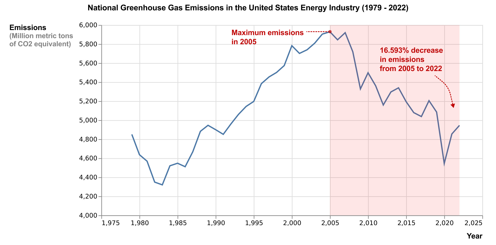
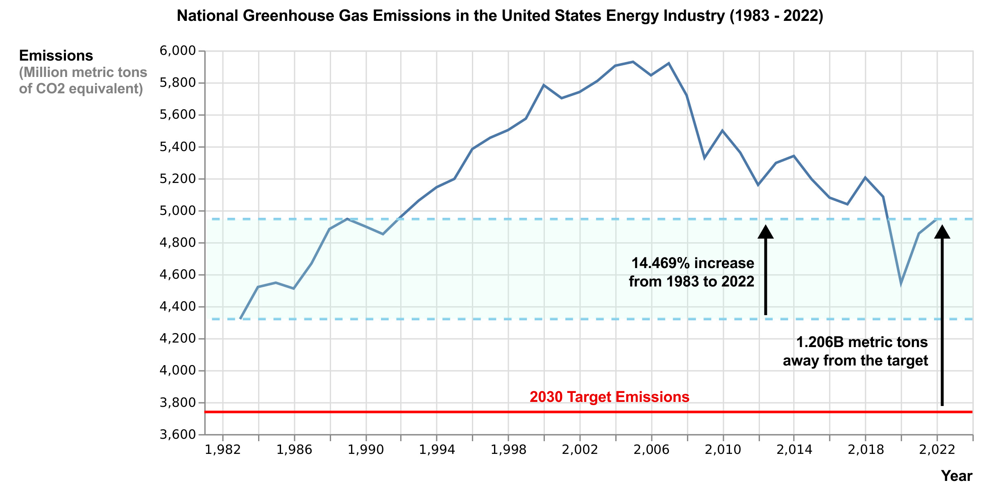

Proposition: The United States has made advancements in working towards its 2030 greenhouse gas emissions targets.
FOR the Proposition

Design Decisions and Rationale:
- In this visualization, my primary objective was to illustrate the progress made by the United States in addressing its 2030 greenhouse gas emissions targets. To achieve this, I strategically emphasized regions where emissions have shown a decline, employing downward-pointing arrows to visually signify this positive trend. The accompanying annotation indicates a 16.593% decrease in emissions within the highlighted area from the year 2005 to the most recent data in 2022. This approach aims to emphasize the reduction in greenhouse gas emissions, supporting the narrative of the country's commitment to sustainable environmental practices. I score this decision as
-1. - Next, I introduced a red marker strategically placed to highlight the peak emissions in 2005. The purpose of this annotation is to underscore the significant contrast between the maximum emissions in 2005 and the recent state, emphasizing the reduction in greenhouse gas emissions. By drawing attention to the highest point on the graph, the audience is prompted to recognize the magnitude of progress achieved over the years. I score this decision as
1. - The last deceptive element in the design of this visualization is the deliberate omission of the target emissions level for 2030. The rationale behind this choice lies in the significant disparity between the projected target and the emissions in 2022 in the United States. Including the target, value might inadvertently lead viewers to a perception that the country is not progressing towards the reduction of greenhouse gas emissions, as the target is considerably lower than the present emission levels. To prevent this perception and to maintain a focus on the positive advancements showcased in the graph, I opted not to display the target level within this graph. I score this decision as
-2.
AGAINST the Proposition

Design Decisions and Rationale:
- In crafting this visualization, my primary aim was to persuade that the United States has not made significant progress in achieving its 2030 greenhouse gas emissions targets. To underscore this perspective, a deceptive element was incorporated by filtering the data to start from 1983, a year when emissions were at their lowest. The x-axis was accordingly truncated to accentuate the apparent rise in emissions from 1983 to the most recent year. By strategically selecting 1983 as the baseline and truncating the x-axis, the visualization places an emphasis on insufficient progress. I score this decision as
-2. - I drew attention to the considerable gap between the emissions in 2022 and the target emissions for 2030. To visually underscore this disparity, I added a red line on the graph, precisely marking the 2030 target level. This addition altered the y-axis to be flatter. I also placed an annotation that explicitly states that, as of 2022, the emissions are 1.206 billion metric tons above the specified target level. The intentional use of the line and annotation aids in reinforcing the narrative of limited progress in reaching the target emissions. I score this decision as
1. - Lastly, I strategically employed only the upward arrows to draw attention to the upward trajectory of emissions. By consistently using upward arrows in the annotations, I aimed to further reinforce the perspective that the United States has encountered challenges in achieving its greenhouse gas reduction goals. I score this decision as
-0.5. I also considered implementing additional data filtering to show the downward trend more prominently. However, I decided not to do this, recognizing that such a deceptive technique could be too obvious and potentially backfire and dissuade my audience.
Final Reflection
[WRITE FINAL REFLECTION PARAGRAPHS HERE.]